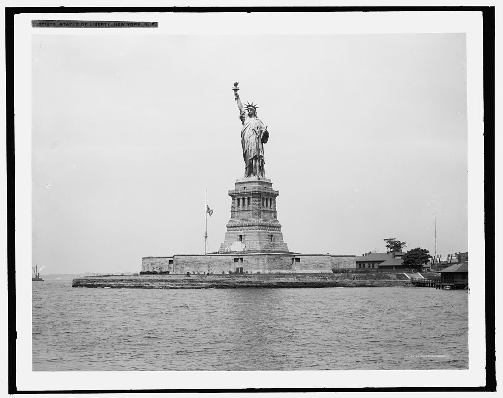

AN INTERACTIVE HISTORY OF POLITICAL CHANGE
How American
parties changed.
Follow the elections, coalitions, and documents behind more than two centuries of party realignment.
MANY REALIGNMENTS
PRESIDENTIAL ELECTION
Electoral votes by state
DOCUMENTS · ART · NATIONAL SYMBOLS
The American story in view.
Remembering the founding
Trumbull’s retrospective painting depicts the drafting committee presenting its work on June 28, 1776.
The Declaration of Independence
Adopted July 4, 1776. Delegates began signing the engrossed parchment on August 2.

NATIONAL SYMBOLLiberty and belonging
A historic view of the Statue of Liberty, photographed between 1900 and 1920.
FOLLOW THE EVIDENCE
A changing map. Several kinds of change.
An election shows one part of realignment. Explore how party positions, voting coalitions, and political participation changed at different speeds.
ISSUES, COALITIONS, AND ORGANIZATIONS
Party evolution
Choose a period to compare party coalitions in their historical context. The Republican Party founded in the 1850s is distinct from Jefferson’s earlier Republican organization.
THE EVIDENCE BEHIND THE ATLAS
Source library
Search the manuscript’s source register. Read a source in its original context; party platforms state official positions, while election returns record electoral outcomes.
FOR STUDENTS, TEACHERS, AND RESEARCHERS
Reading the atlas
This atlas follows multiple realignments, from the first party system through the most recent completed presidential election in 2024.